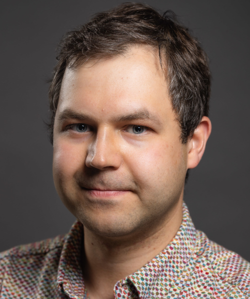

Speaker 1: Dr. Vladislav Golyanik, 4D and Quantum Computer Vision Group
Vladislav Golyanik received a Ph.D. degree in computer science from the University of Kaiserslautern, Germany, in 2019 (advised by Didier Stricker). He is currently leading the 4D and Quantum Vision (4DQV) group at the MPI for Informatics. Before 4DQV, Vladislav was a Postdoc at MPI for Informatics (Christian Theobalt's group). He was also a visiting Fellow at NVIDIA, San José, CA, USA, and the Institute of Robotics and Industrial Informatics, Barcelona, Spain. Vladislav's team is interested in 3D reconstruction and neural rendering of rigid and non-rigid scenes, 3D generative models, quantum visual computing as well as physics-based methods in vision and graphics.
Speaker 2: Prof. Tali Treibitz, Imagining Lab
Prof. Tali Treibitz is the head of the Marine Imaging Lab, in the Department for Marine Technologies, Charney School of Marine Sciences, University of Haifa. Previously, she was a postdoc, working with Prof. David Kriegman in the Computer Vision group, Computer Science and Engineering department in the University of California, San Diego, and with Prof. Jules Jaffe in the Jaffe laboratory for Underwater Imaging in the Scripps Institution of Oceanography. Tali received her B.Sc. in Electrical Engineering from the Technion-Israel Institute of Technology and her M.Sc. in Electrical Engineering from Tel Aviv University. In 2010 she defended her Ph.D. entitled "Geometry and Photometry of Imaging Through a Medium" from the Electrical Engineering Technion, under the supervision of Prof. Yoav Schechner, in the Hybrid Imaging lab. Her research interests include computer vision and image processing with a focus on physics-based image restoration.